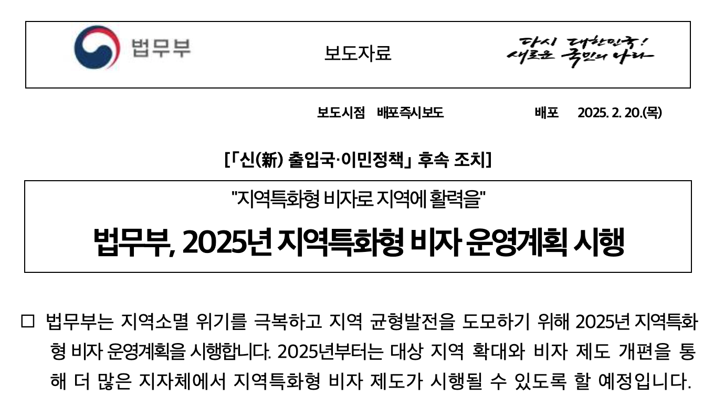
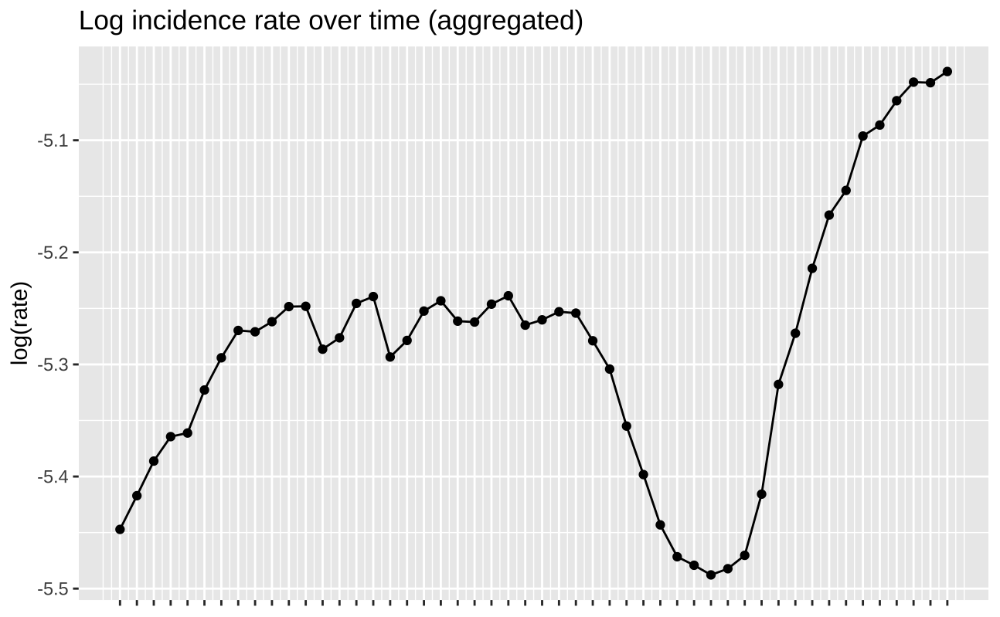
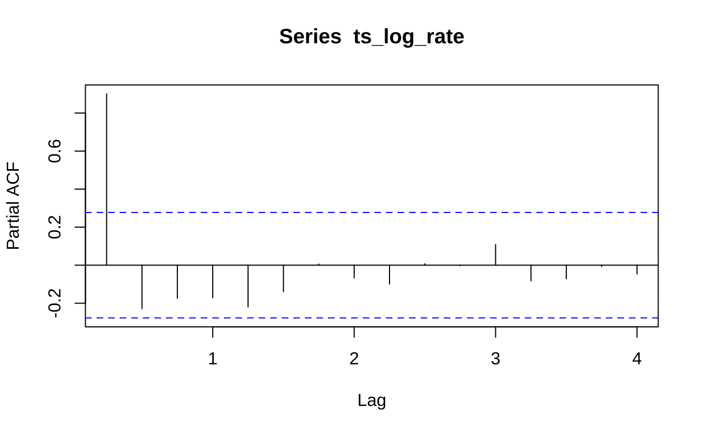
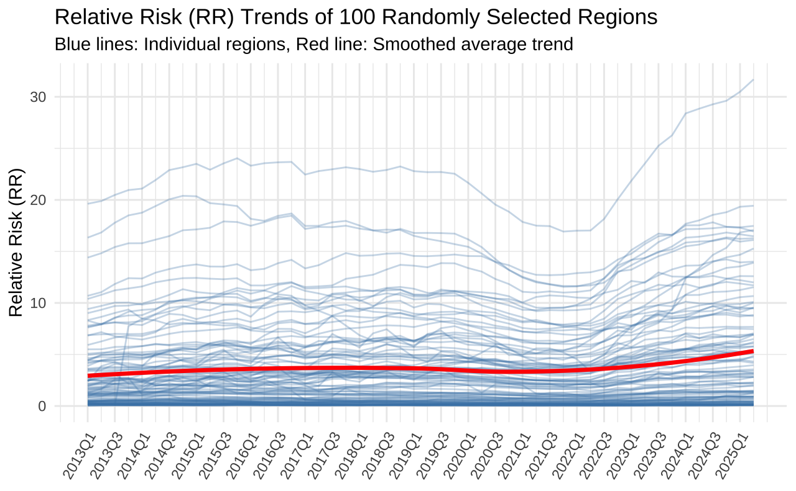
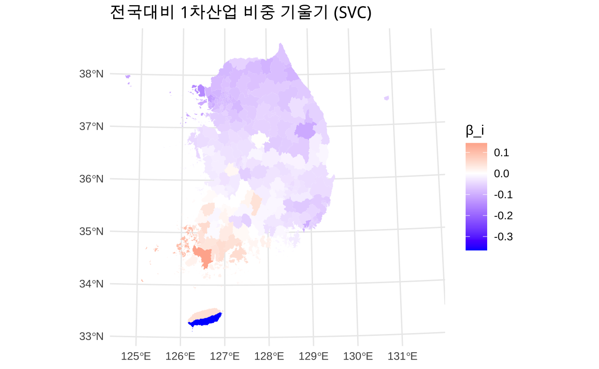
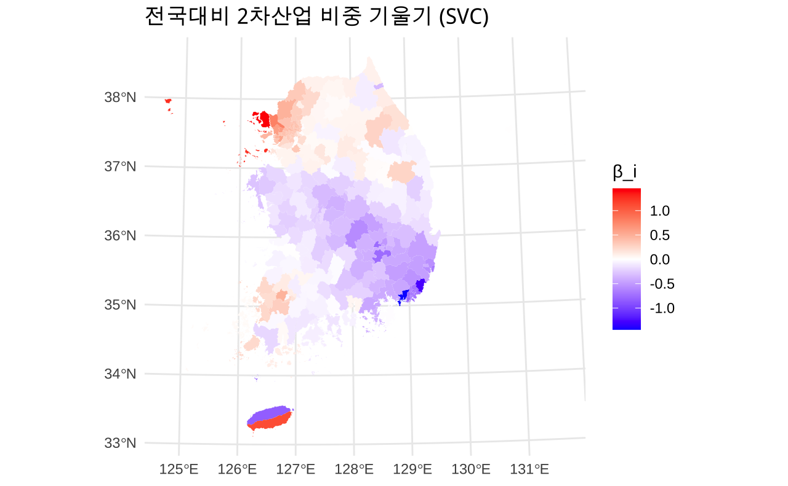

시공간 베이지안 계층 모형을 이용한 고용허가제(E-9) 외국인 근로자 패널 자료 분석
<공간정보분석 3: 시공간 데이터사이언스> 프로젝트 결과 발표
2025-12-10
국내 체류 외국인 약 156만 명 중 E-9(비전문취업) 비자가 가장 높은 비중 차지 (약 33만 명)
공간적 문제: 인구 감소 및 고령화 위기 → 단순 노동 분야 외국인력 수급의 중요성
인구구조 변동에 따른 지역 격차의 다층성
비수도권에서의 인력 수급 상대적으로 어려움
지역특화형 비자를 확대하는 등의 정책적 노력 진행 중

문제 상황:
지자체별 특성에 맞는 등록외국인 관리 전략 부족
시군구 단위의 실증적 데이터와 분석이 매우 제한적
핵심 연구 질문 (RQ)
(인구) 성비(남초)가 높을수록, 고령층 비율이 높을수록, 인구 유출이 높을수록 E-9 발생률이 높을 것이다.
(거시경제) 경기 상황을 나타내는 무역수지 등과 E-9 발생률 간에는 관계가 적을 것이다.
(산업) 제조업 비중이 높은 시군구일수록 E-9 발생률이 높을 것이다.
(지역) 비수도권에 비해 수도권 지역의 E-9 발생률이 높을 것이다.
| 구분 | 변수명 | 시공간 해상도 |
|---|---|---|
| 인구 구조 | 성비, 연령층별 인구, MEI 등 | 시군구 × 분기 |
| 경제 | 수출입액, 무역수지, 경제활동인구 | 시군구 × 분기/반기 |
| 산업 구조 | 산업별 종사자 수 비중, GRDP 비중 | 시군구 × 반기/년 |
| 더미 | 수도권/비수도권, 시/군/구, 코로나19, 산업단지 유무 | 시군구 × 분기 |
| 기타 (시도 수준) | 부족인원, 제조업생산지수 등 | 시도 × 분기/년 |
Important
주요 난점 1
분석 기간 내 행정구역 변동 → (1) matching table 구성 (2) 최신 행정구역을 기준으로 병합/연결 진행
명칭 변동: 당진, 여주, 포천, 인천 남구 등
행정구역 통합: 청주-청원, 마산-진해-창원
데이터 원천별 코드 불일치 (행정구역, 산업, …) → 코드 연계표 활용
\[ y_{i,t} \mid \lambda_{i,t} \sim \text{Poisson}(E_{i,t}\lambda_{i,t}) \]
\[ \log \lambda_{i,t} = \alpha + x_{i,t}'\beta + u_{i,t} + \eta_t \]
\[ \begin{align} u_{i,t} = \rho_u u_{i, t-1} + \epsilon_{i, t} \\ \epsilon_{i,t} \sim \text{BYM2}(W, \tau_u, \phi), \\ \eta_t \sim \text{AR(1)}(\rho_\eta, \tau_\eta) \end{align} \]
Priors: \(\tau_n, \phi, \tau_\eta, \rho_u, \rho_\eta\)
사후분포:
\[ \pi(\mathbf{x}, {\theta} \mid \mathbf{y}) \propto \underbrace{\pi(\mathbf{y} \mid \mathbf{x}, {\theta})}_{\text{Likelihood}} \times \underbrace{\pi(\mathbf{x} \mid {\theta})}_{\text{Latent Field}} \times \underbrace{\pi({\theta})}_{\text{Hyperpriors}} \]
해석 방법:
\(E_{i, t}\)(offset) 설정에 따른 \(\lambda_{i,t}\)(rate)해석의 차이:
인구 수: “지역 내 E-9 외국인 근로자가 얼마나 많은가?”
전체 종사자 수: “지역 노동력 중 E-9 외국인 근로자가 차지하는 비중은 얼마인가?” ✅
\(\beta\)의 해석: 승법적 효과 (Multiplicative Effect)
로그 연결 함수를 이용
변수 \(x\)가 1단위 증가할 때, 유입률(Rate)는 \(\exp(\beta)\)배 증가
사후분포의 추정: INLA
Integrated Nested Laplace Approximations
MCMC 대비 연산 속도가 빠름 (복잡한 시공간 모형에서 널리 활용)
R의 INLA 패키지 이용
무엇이 “시공간적”인가?
\[ \log \lambda_{i,t} = \alpha + x_{i,t}'\beta + u_{i,t} + \eta_t \]





시공간 상호작용을 고려한 모형의 설명력이 가장 우수함.
| Model | 특징 | WAIC | 비고 |
|---|---|---|---|
| (1), (2) Temporal | RW1 / AR1 | 12.1억 | 설명력 낮음 |
| (3) Covariates | 공변량만 추가 | 8.6억 | 일부 개선 |
| (4) Additive | 공간 + 시간 (additive) | 392만 | 대폭 개선 |
| (5) Interaction | 공간 × 시간 상호작용(BYM2*AR1) | 10.1만 | Best Model |
| (6) Full Model | 상호작용 + 공변량 | 10.1만 | (5)와 유사 |
| 구분 | 변수명 | Mean | SD | 95% CI | Sig |
|---|---|---|---|---|---|
| Constant | (Intercept) | -7.051 | 1.135 | [-9.274, -4.820] | Yes |
| Demographic | 성비 | 0.012 | 0.011 | [-0.009, 0.034] | |
| 65세 이상 인구 비율 | 0.000 | 0.000 | [0.000, 0.000] | ||
| 인구 이동 유효도 지수 | 0.004 | 0.008 | [-0.011, 0.019] | ||
| Economy | 무역수지 | -0.041 | 0.021 | [-0.082, -0.001] | Yes |
| 전국대비 1차산업 GRDP 비중 | 0.044 | 0.037 | [-0.029, 0.117] | ||
| 전국대비 2차산업 GRDP 비중 | 0.045 | 0.046 | [-0.045, 0.135] | ||
| Industry | 제조업 종사자 비율 (Z) | 0.721 | 0.077 | [0.569, 0.872] | Yes |
| 건설업 종사자 비율 (Z) | 0.011 | 0.026 | [-0.040, 0.062] | ||
| 도소매업 종사자 비율 (Z) | 0.044 | 0.045 | [-0.045, 0.132] | ||
| Labor | 고용률 (15-64) (Z) | -0.134 | 0.027 | [-0.187, -0.081] | Yes |
| Context | 코로나 시기 | 0.422 | 0.216 | [-0.128, 0.795] | |
| Region | 수도권 여부 | 0.263 | 0.337 | [-0.400, 0.922] | |
| 시 지역 (군 대비) | -0.012 | 0.155 | [-0.318, 0.292] | ||
| 구 지역 (군 대비) | -2.598 | 0.224 | [-3.037, -2.158] | Yes | |
| Infra | 산업단지 유무 | 0.814 | 0.199 | [0.426, 1.206] | Yes |
| 산업단지 면적 (Z) | -0.038 | 0.065 | [-0.165, 0.090] |
ind_ratio_manufacturing_z)
indpark_dummy)
area_mgmt)은 크게 상관이 없었음dummy_gu)
lf_employment_rate)
| 구분 | 변수명 | Mean | SD | 95% CI | Sig |
|---|---|---|---|---|---|
| Constant | (Intercept) | -7.499 | 0.306 | [-8.087, -6.909] | Yes |
| Demographic | 성비 (Z) | 0.056 | 0.067 | [-0.075, 0.187] | |
| 65세 이상 인구 (Z) | -0.278 | 0.076 | [-0.428, -0.130] | Yes | |
| 인구이동지표 (Z) | 0.002 | 0.008 | [-0.013, 0.018] | ||
| Economy | 무역수지 (Z) | -0.047 | 0.020 | [-0.087, -0.007] | Yes |
| 1차산업 GRDP 편차 (Z) | -0.009 | 0.038 | [-0.084, 0.065] | ||
| 2차산업 GRDP 편차 (Z) | 0.044 | 0.046 | [-0.047, 0.134] | ||
| Industry | 제조업 비율 (Z) | 0.977 | 0.083 | [0.813, 1.139] | Yes |
| 건설업 비율 (Z) | 0.020 | 0.027 | [-0.033, 0.072] | ||
| 도소매업 비율 (Z) | 0.027 | 0.047 | [-0.065, 0.119] | ||
| Labor | 고용률 (15-64) (Z) | -0.150 | 0.027 | [-0.202, -0.097] | Yes |
| Context | 코로나 시기 | 0.421 | 0.203 | [-0.046, 0.798] | |
| Region | 수도권 여부 | 0.473 | 0.385 | [-0.284, 1.228] | |
| 시 지역 (군 대비) | 0.231 | 0.173 | [-0.109, 0.570] | ||
| 구 지역 (군 대비) | -2.479 | 0.253 | [-2.974, -1.983] | Yes | |
| Infra | 산업단지 유무 | 1.188 | 0.230 | [0.738, 1.642] | Yes |
| 산단 관리면적 (Z) | -0.014 | 0.073 | [-0.157, 0.131] |
pop_65plus (\(\beta \approx -0.28\)): 고령화가 심한 지역일수록 제조업 기반이 약화되어 외국인력 수요가 낮게 나타남trade_balance (\(\beta \approx -0.05\)): 무역수지가 악화될수록(적자) 비전문 외국인력 의존도가 높아지는 경향| 구분 | 변수명 | Mean | SD | 95% CI | Sig |
|---|---|---|---|---|---|
| Constant | (Intercept) | -1.455 | 1.184 | [-3.778, 0.869] | |
| Demographic | 성비 | -0.004 | 0.010 | [-0.024, 0.015] | |
| 65세 이상 인구 비율 | 0.000 | 0.000 | [0.000, 0.000] | ||
| 인구이동유효도지수 (Z) | 0.015 | 0.006 | [0.003, 0.027] | Yes | |
| Economy | 무역수지 (Z) | -0.026 | 0.019 | [-0.063, 0.011] | |
| 1차산업 GRDP 편차 (Z) | -0.045 | 0.031 | [-0.106, 0.015] | ||
| 2차산업 GRDP 편차 (Z) | -0.064 | 0.043 | [-0.148, 0.021] | ||
| Industry | 제조업 비율 (Z) | 0.330 | 0.082 | [0.170, 0.490] | Yes |
| 건설업 비율 (Z) | 0.026 | 0.020 | [-0.014, 0.066] | ||
| 도소매업 비율 (Z) | 0.059 | 0.040 | [-0.020, 0.138] | ||
| Labor | 고용률 (15-64) (Z) | -0.076 | 0.021 | [-0.117, -0.035] | Yes |
| Context | 코로나 시기 | 0.055 | 0.183 | [-0.294, 0.439] | |
| Region | 수도권 여부 | 0.326 | 0.691 | [-1.029, 1.681] | |
| 시 지역 (군 대비) | -0.407 | 0.308 | [-1.013, 0.196] | ||
| 구 지역 (군 대비) | -6.328 | 0.451 | [-7.216, -5.446] | Yes | |
| Infra | 산업단지 유무 | 2.071 | 0.433 | [1.227, 2.926] | Yes |
| 산단 관리면적 (Z) | -0.092 | 0.131 | [-0.349, 0.165] |
dummy_gu (\(\beta \approx -6.3\)): 대도시 자치구 지역은 E9-3 수요가 사실상 0에 수렴
indpark (\(\beta \approx 2.1\)): 순수 경작지보다 농공단지가 결합된 지역에서 인력 수요 급증


E-9 등록외국인 데이터는 무작위 분포가 아닌, 강한 공간적 자기상관(Spatial Autocorrelation)과 시계열적 의존성(Temporal Dependence), 둘 간의 상호작용에 의한 의존성을 내포하고 있음
’독립성 가정’이 위배됨 → 시공간적 의존성을 제외한 결정 요인의 영향력 분석할 필요 있음
기존의 선형 회귀나 단순 패널 모형은 시공간적 상호작용을 설명하는 데 한계가 있음
시공간 베이지안 모형은 고정효과와 랜덤효과를 계층적으로 분리하여 이를 효과적으로 모델링 함
SVC, 세부자격별 모형, 다른 공분산 구조 등으로 확장 가능함
\(\implies\) 단순한 총량 규제를 넘어, 시군구별 산업 특성과 인구 구조를 반영한 정밀한 지역 맞춤형 외국인력 정책 수립의 실증적 근거를 제공
감사합니다.